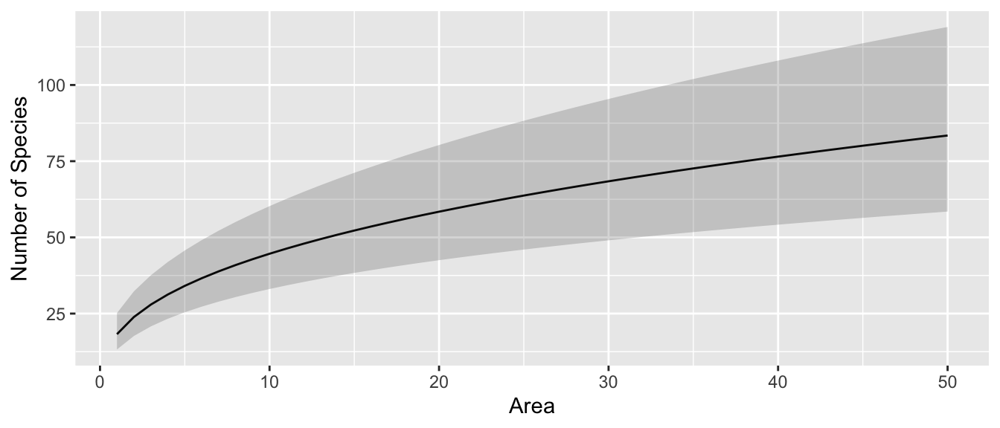
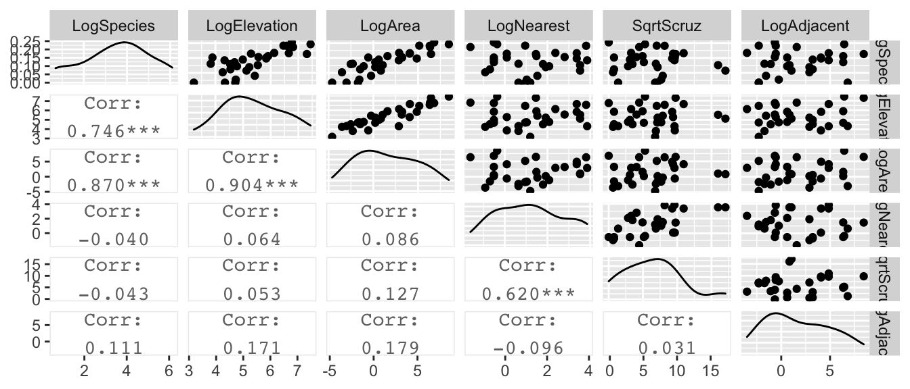
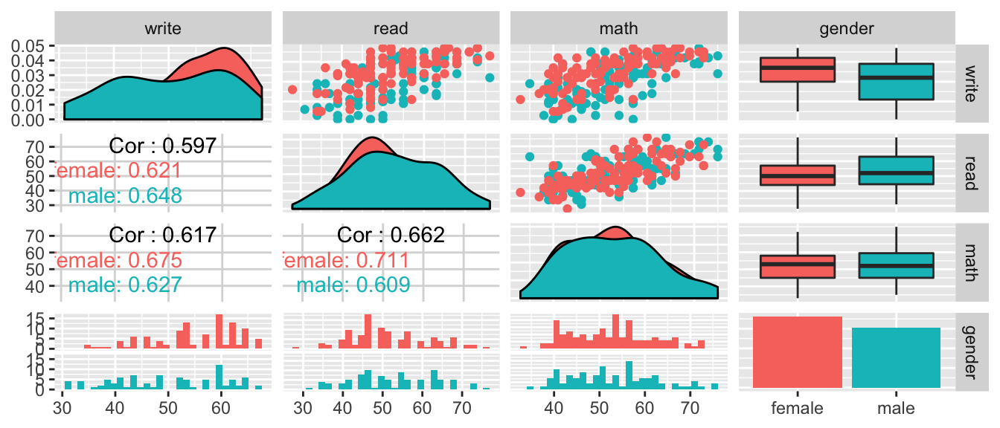
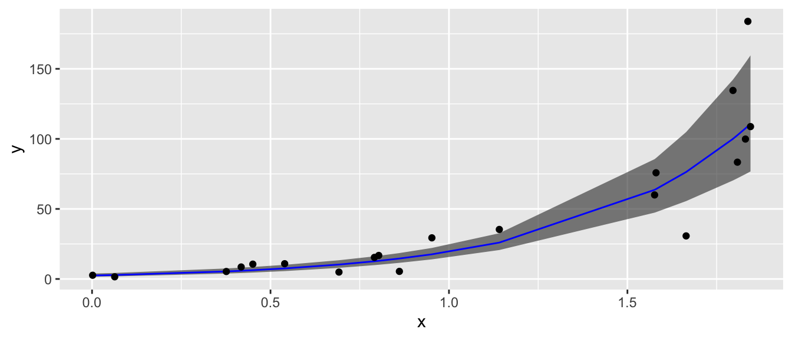
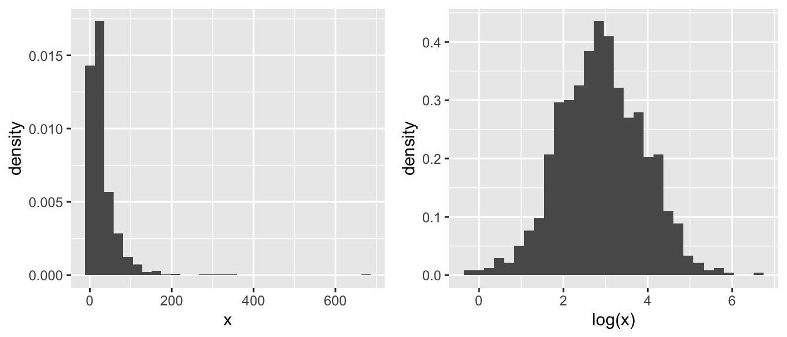
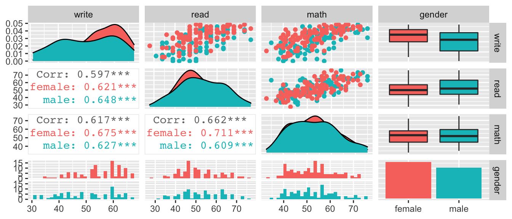
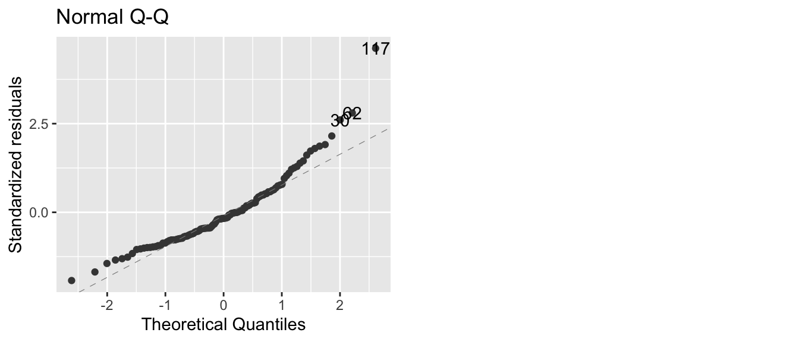

Chapter 8 Data Transformations
library(ggfortify) # for autoplot for lm objects
library(emmeans) # emmeans for pairwise constrasts.
library(tidyverse) # for dplyr, tidyr, ggplot2Transformations of the response variable and/or the predictor variables can drastically improve the model fit and can correct violations of the model assumptions. We might also create new predictor variables that are functions of existing variables. These include quadratic and higher order polynomial terms and interaction terms.
Often we are presented with data and we would like to fit a linear model to the data. Unfortunately the data might not satisfy all of the assumptions of a linear model. For the simple linear model \[y_i=\beta_{0}+\beta_{1}x_i+\epsilon_i\] where \(\epsilon_i \stackrel{iid}{\sim} N\left(0,\sigma^{2}\right)\), the necessary assumptions are:
- Independent errors
- Errors have constant variance, no matter what the x-value (or equivalently the fitted value)
- Errors are normally distributed
- The model contains all the appropriate covariates and no more.
In general, a transformation of the response variable can be used to address the 2nd and 3rd assumptions, and adding new covariates to the model will be how to address deficiencies of assumption 4. Because of the interpretability properties we will develop here, \(\log()\) transformations are very popular, if they are useful.
8.1 A review of \(\log(x)\) and \(e^x\)
One of the most common transformations that is used on either the response \(y\) or the covariates \(x\) is the \(\log()\) function. In this next section we will consider \(\log()\) with base \(e\). However, if you prefer \(\log_2()\) or \(\log_{10}\) you may substitute \(e\) with \(2\) or \(10\) everywhere.
In primary school you might have learned that the \(\log()\) function looks like this: 
Critical aspects to notice about \(\log(x)\):
- As \(x \to 0\), \(\log(x) \to -\infty\).
- At \(x=1\) we have \(log(x=1) = 0\).
- As \(x \to \infty\), \(\log(x) \to \infty\) as well, but at a much slower rate.
- Even though \(log(x)\) is only defined for \(x>0\), the result can take on any real value, positive or negative.
The inverse function of \(\log(x)\) is \(e^x = \exp(x)\), where \(e=2.71828\dots\) which looks like this: 
Critical aspects to notice about \(e^x\):
- as \(x \to -\infty\), \(e^x \to 0\).
- At \(x =0\) we have \(e^0 = 1\).
- as \(x \to \infty\), \(e^x \to \infty\) as well, but at a much faster rate.
- The function \(e^x\) can be evaluated for any real number, but the result is always \(>0\).
Finally we have that \(e^x\) and \(log(x)\) are inverse functions of each other by the following identity: \[x = \log\left( e^x \right )\] and \[x = e^{\log(x)} \;\;\; \textrm{ if } x >0\]
Also it is important to note that the \(\log\) function has some interesting properties in that it makes operations “1-operation easier”. \[\begin{aligned} \log\left(a^{b}\right) &= b\log a \\ \log\left(\frac{a}{b}\right) &= \log a-\log b \\ \log\left(ab\right) &= \log a+\log b \end{aligned}\]
One final aspect of exponents that we will utilize is that \[ e^{a+b} = e^a e^b\]
The reason we like using a \(\log()\) transformation is that it acts differently on large values than small. In particular for \(x >1\) we have that \(\log(x)\) makes all of the smaller, but the transformation on big values of \(x\) is more extreme. Consider the following, where most of the x-values are small, but we have a few that are quite large. Those large values will have extremely high leverage and we’d like to reduce that.

8.2 Transforming the Response
When the normality or constant variance assumption is violated, sometimes it is possible to transform the response to satisfy the assumption. Often times count data is analyzed as log(count) and weights are analyzed after taking a square root or cube root transform. Statistics involving income or other monetary values are usually analyzed on the log scale so as to reduce the leverage of high income observations.
While we may want to transform the response in order to satisfy the statistical assumptions, it is often necessary to back-transform to the original scale. For example if we fit a linear model for income (\(y\)) based on the amount of schooling the individual has received (\(x\)) \[\log y=\beta_{0}+\beta_{1}x+\epsilon\] then we might want to give a prediction interval for an \(x_{0}\) value. The predicted \(log(income)\) value is \[\log\left(\hat{y}_{0}\right)=\hat{\beta}_{0}+\hat{\beta}_{x}x_{0}\] and we could calculate the appropriate predicted income as \(\hat{y}_{0}=e^{log\left(\hat{y}_{0}\right)}\). Likewise if we had a confidence interval or prediction interval for \(\log\left(\hat{y}_{0}\right)\) of the form \(\left(l,u\right)\) then the appropriate interval for \(\hat{y}_{0}\) is \(\left(e^{l},e^{u}\right)\). Notice that while \(\left(l,u\right)\) might be symmetric about \(\log\left(\hat{y}_{0}\right)\), the back-transformed interval is not symmetric about \(\hat{y}_{0}\).
Unfortunately the interpretation of the regression coefficients \(\hat{\beta}_{0}\) and \(\hat{\beta}_{1}\) on the un-transformed scale becomes more complicated. This is a very serious difficulty and might sway a researcher from transforming their data.
8.2.1 Box-Cox Family of Transformations
The Box-Cox method is a popular way of determining what transformation to make. It is intended for responses that are strictly positive (because \(\log0=-\infty\) and the square root of a number gives complex numbers, which we don’t know how to address in regression). The transformation is defined as \[g\left(y\right)=\begin{cases} \frac{y^{\lambda}-1}{\lambda} & \lambda\ne0\\ \log y & \lambda=0 \end{cases}\] This transformation is a smooth family of transformations because \[\lim_{\lambda\to0}\frac{y^{\lambda}-1}{\lambda}=\log y\] In the case that \(\lambda\ne 0\), then a researcher will usually use the simpler transformation \(y^{\lambda}\) because the subtraction and division does not change anything in a non-linear fashion. Thus for purposes of addressing the assumption violations, all we care about is the \(y^{\lambda}\) and prefer the simpler (i.e. more interpretable) transformation.
Finding the best transformation can be done by adding the \(\lambda\) parameter to the model and finding the value that maximizes the log-likelihood function. Fortunately, we don’t have to do this by hand, as the function boxcox() in the MASS library will do all the heavy calculation for us.
data(gala, package='faraway')
g <- lm(Species ~ Area + Elevation + Nearest + Scruz + Adjacent, data=gala)
# I don't like loading the MASS package because it includes a select() function
# that fights with dplyr::select(), so whenever I use a function in the MASS
# package, I just call it using the package::function() naming.
#
# #MASS::boxcox(g, lambda=seq(-2,2, by=.1)) # Set lambda range manually...
MASS::boxcox( g ) # With default lambda range.
The optimal transformation for these data would be \(y^{1/4}=\sqrt[4]{y}\) but that is an extremely uncommon transformation. Instead we should pick the nearest “standard” transformation which would suggest that we should use either the \(\log y\) or \(\sqrt{y}\) transformation.
Thoughts on the Box-Cox transformation:
- In general, I prefer to using a larger-than-optimal model when picking a transformation and then go about the model building process. After a suitable model has been chosen, I’ll double check the my transformation was appropriate given the model that I ended up with.
- Outliers can have a profound effect on this method. If the “optimal” transformation is extreme (\(\lambda=5\) or something silly) then you might have to remove the outliers and refit the transformation.
- If the range of the response \(y\) is small, then the method is not as sensitive.
- These are not the only possible transformations. For example, for binary data, the
logitandprobittransformations are common. In classical non-parametric statistics, we take a rank transformation to the y-values.
8.3 Transforming the predictors
8.3.1 Polynomials of a predictor
Perhaps the most common transformation to make is to make a quadratic function in \(x\). Often the relationship between \(x\) and \(y\) follows a curve and we want to fit a quadratic model \[\hat{y}=\hat{\beta}_{0}+\hat{\beta}_{1}x+\hat{\beta}_{2}x^{2}\] and we should note that this is still a linear model because \(\hat{y}\) is a linear function of \(x\) and \(x^{2}\). As we have already seen, it is easy to fit the model. Adding the column of \(x^{2}\) values to the design matrix does the trick.
The difficult part comes in the interpretation of the parameter values. No longer is \(\hat{\beta}_{1}\) the increase in \(y\) for every one unit increase in \(x\). Instead the three parameters in my model interact in a complicated fashion. For example, the peak of the parabola is at \(-\hat{\beta}_{1}/2\hat{\beta}_{2}\) and whether the parabola is cup shaped vs dome shaped and its steepness is controlled by \(\hat{\beta}_{2}\). Because my geometric understanding of degree \(q\) polynomials relies on have all factors of degree \(q\) or lower, whenever I include a covariate raised to a power, I should include all the lower powers as well.
8.3.2 Log and Square Root of a predictor
Often the effect of a covariate is not linearly related to response, but rather some function of the covariate. For example the area of a circle is not linearly related to its radius, but it is linearly related to the radius squared. \[Area=\pi r^{2}\] Similar situations might arise in biological settings, such as the volume of conducting tissue being related to the square of the diameter. Or perhaps an animals metabolic requirements are related to some power of body length. In sociology, it is often seen that the utility of, say, $1000 drops off in a logarithmic fashion according to the person’s income. To a graduate student, $1K is a big deal, but to a corporate CEO, $1K is just another weekend at the track. Making a log transformation on any monetary covariate, might account for the non-linear nature of “utility”.
Picking a good transformation for a covariate is quite difficult, but most fields of study have spent plenty of time thinking about these issues. When in doubt, look at scatter plots of the covariate vs the response and ask what transformation would make the data fall onto a line?
8.3.3 Galapagos Example
To illustrate how to add a transformation of a predictor to a linear model in R, we will consider the Galapagos data in faraway.
data('gala', package='faraway')
# look at all the scatterplots
gala %>%
mutate(LogSpecies = log(Species)) %>%
dplyr::select(LogSpecies, Area, Elevation, Nearest, Scruz, Adjacent) %>%
GGally::ggpairs(upper=list(continuous='points'), lower=list(continuous='cor'))
Looking at these graphs, I think I should definitely transform Area and Adjacent, and I wouldn’t object to doing the same to Elevation, Nearest and Scruz. Given the high leverages, a log transformation should be a good idea. One problem is that \(\log(0) = -\infty\). A quick look at the data set summary:
gala %>%
dplyr::select(Species, Area, Elevation, Nearest,Scruz, Adjacent) %>%
summary()## Species Area Elevation Nearest
## Min. : 2.00 Min. : 0.010 Min. : 25.00 Min. : 0.20
## 1st Qu.: 13.00 1st Qu.: 0.258 1st Qu.: 97.75 1st Qu.: 0.80
## Median : 42.00 Median : 2.590 Median : 192.00 Median : 3.05
## Mean : 85.23 Mean : 261.709 Mean : 368.03 Mean :10.06
## 3rd Qu.: 96.00 3rd Qu.: 59.237 3rd Qu.: 435.25 3rd Qu.:10.03
## Max. :444.00 Max. :4669.320 Max. :1707.00 Max. :47.40
## Scruz Adjacent
## Min. : 0.00 Min. : 0.03
## 1st Qu.: 11.03 1st Qu.: 0.52
## Median : 46.65 Median : 2.59
## Mean : 56.98 Mean : 261.10
## 3rd Qu.: 81.08 3rd Qu.: 59.24
## Max. :290.20 Max. :4669.32reveals that Scruz has a zero value, and so a log transformation will result in a \(-\infty\). So, lets take the square root of Scruz
gala %>%
mutate(LogSpecies = log(Species), LogElevation=log(Elevation), LogArea=log(Area), LogNearest=log(Nearest),
SqrtScruz=sqrt(Scruz), LogAdjacent=log(Adjacent)) %>%
dplyr::select(LogSpecies, LogElevation, LogArea, LogNearest, SqrtScruz, LogAdjacent) %>%
GGally::ggpairs(upper=list(continuous='points'), lower=list(continuous='cor'))
Looking at these graphs, it is clear that log(Elevation) and log(Area) are highly correlated and we should probably have one or the other, but not both in the model.
m.c <- lm(log(Species) ~ log(Area) + log(Nearest) + sqrt(Scruz) + log(Adjacent), data=gala)
summary(m.c)$coefficients %>% round(digits=3) # more readable...## Estimate Std. Error t value Pr(>|t|)
## (Intercept) 3.285 0.275 11.960 0.000
## log(Area) 0.402 0.043 9.443 0.000
## log(Nearest) -0.041 0.118 -0.351 0.728
## sqrt(Scruz) -0.049 0.045 -1.085 0.288
## log(Adjacent) -0.024 0.046 -0.529 0.602We will remove all the parameters that appear to be superfluous, and perform an F-test to confirm that the simple model is sufficient.
m.s <- lm(log(Species) ~ log(Area), data=gala)
anova(m.s, m.c)## Analysis of Variance Table
##
## Model 1: log(Species) ~ log(Area)
## Model 2: log(Species) ~ log(Area) + log(Nearest) + sqrt(Scruz) + log(Adjacent)
## Res.Df RSS Df Sum of Sq F Pr(>F)
## 1 28 17.218
## 2 25 15.299 3 1.9196 1.0456 0.3897Next we will look at the coefficients.
summary(m.s)##
## Call:
## lm(formula = log(Species) ~ log(Area), data = gala)
##
## Residuals:
## Min 1Q Median 3Q Max
## -1.5442 -0.4001 0.0941 0.5449 1.3752
##
## Coefficients:
## Estimate Std. Error t value Pr(>|t|)
## (Intercept) 2.9037 0.1571 18.484 < 2e-16 ***
## log(Area) 0.3886 0.0416 9.342 4.23e-10 ***
## ---
## Signif. codes: 0 '***' 0.001 '**' 0.01 '*' 0.05 '.' 0.1 ' ' 1
##
## Residual standard error: 0.7842 on 28 degrees of freedom
## Multiple R-squared: 0.7571, Adjusted R-squared: 0.7484
## F-statistic: 87.27 on 1 and 28 DF, p-value: 4.23e-10The slope coefficient (0.3886) is the increase in log(Species) for every 1 unit increase in log(Area). Unfortunately that is not particularly convenient to interpretation and we will address this in the next section of this chapter.
Finally, we might be interested in creating a confidence interval for the expected number of tortoise species for an island with Area=50.
x0 <- data.frame(Area=50)
log.Species.CI <- predict(m.s, newdata=x0, interval='confidence')
log.Species.CI # Log(Species) scale## fit lwr upr
## 1 4.423903 4.068412 4.779394exp(log.Species.CI) # Species scale## fit lwr upr
## 1 83.42122 58.46403 119.0322Notice that on the species-scale, we see that the fitted value is not in the center of the confidence interval.
To help us understand what the log transformations are doing, we can produce a plot with the island Area on the x-axis and the expected number of Species on the y-axis and hopefully that will help us understand the relationship between the two.
library(ggplot2)
pred.data <- data.frame(Area=1:50)
pred.data <- pred.data %>%
cbind( predict(m.s, newdata=pred.data, interval='conf'))
ggplot(pred.data, aes(x=Area)) +
geom_line(aes(y=exp(fit))) +
geom_ribbon(aes(ymin=exp(lwr), ymax=exp(upr)), alpha=.2) +
ylab('Number of Species')
8.4 Interpretation of \(\log_{10}\) and \(\log\) transformed variables
One of the most difficult issues surrounding transformed variables is that the interpretation is difficult. Compared to taking the square root, \(\log\) transformations are surprisingly interpretable on the original scale. Here we look at the interpretation of log transformed variables.
To investigate the effects of a log transformation, we’ll examine a dataset that predicts the writing scores of \(n=200\) students using the gender, reading and math scores. This example was taken from the UCLA Statistical Consulting Group.
file <- 'https://stats.idre.ucla.edu/wp-content/uploads/2016/02/lgtrans.csv' # on the web
file <- 'data-raw/lgtrans.csv' # on my laptop
scores <- read.csv(file=file)
scores <- scores %>% rename(gender = female)
scores %>%
dplyr::select(write, read, math, gender) %>%
GGally::ggpairs( aes(color=gender),
upper=list(continuous='points'), lower=list(continuous='cor'))## `stat_bin()` using `bins = 30`. Pick better value with `binwidth`.
## `stat_bin()` using `bins = 30`. Pick better value with `binwidth`.
## `stat_bin()` using `bins = 30`. Pick better value with `binwidth`.
These data look pretty decent, and I’m not certain that I would do any transformation, but for the sake of having a concrete example that has both continuous and categorical covariates, we will interpret effects on a students’ writing score.
8.4.1 Log-transformed response, un-transformed covariates
We consider the model where we have transformed the response variable and just an intercept term. \[\log y=\beta_{0}+\epsilon\]
model <- lm(log(write) ~ 1, data=scores)
broom::tidy(model)## # A tibble: 1 x 5
## term estimate std.error statistic p.value
## <chr> <dbl> <dbl> <dbl> <dbl>
## 1 (Intercept) 3.95 0.0137 288. 7.01e-263We interpret the intercept as the mean of the log-transformed response values. We could back transform this to the original scale \(\hat{y} = e^{\hat{\beta}_{0}} = e^{3.94835} = 51.85\) as a typical value of write. To distinguish this from the usually defined mean of the write values, we will call this as the geometric mean. Instead of calculating this by hand, we can have emmeans() do it for us.
emmeans(model, ~1) # Return y-hat value on the log-scale## 1 emmean SE df lower.CL upper.CL
## overall 3.95 0.0137 199 3.92 3.98
##
## Results are given on the log (not the response) scale.
## Confidence level used: 0.95emmeans(model, ~1, type='response') # Return y-hat value on the original scale## 1 response SE df lower.CL upper.CL
## overall 51.8 0.71 199 50.5 53.3
##
## Confidence level used: 0.95
## Intervals are back-transformed from the log scaleNext we examine how to interpret the model when a categorical variable is added to the model. \[\log y=\begin{cases} \beta_{0}+\epsilon & \;\;\textrm{if female}\\ \beta_{0}+\beta_{1}+\epsilon & \;\;\textrm{if male} \end{cases}\]
model <- lm(log(write) ~ gender, data=scores)
broom::tidy(model)## # A tibble: 2 x 5
## term estimate std.error statistic p.value
## <chr> <dbl> <dbl> <dbl> <dbl>
## 1 (Intercept) 4.00 0.0179 223. 1.02e-239
## 2 gendermale -0.103 0.0266 -3.89 1.39e- 4The intercept is now the mean of the log-transformed write responses for the females and thus \(e^{\hat{\beta}_0} = \hat{y}_{f}\) and the offset for males is the change in log(write) from the female group. Notice that for the males, we have
\[\begin{aligned}
\log\hat{y}_m &= \hat{\beta}_{0}+\hat{\beta}_{1} \\
\hat{y}_m &= e^{\hat{\beta}_{0}+\hat{\beta}_{1}} \\
&= \underset{\hat{y}_{f}}{\underbrace{e^{\hat{\beta}_{0}}}}\;\;\;\;\;\underset{\textrm{multiplier for males}}{*\;\;\underbrace{e^{\hat{\beta}_{1}}}}
\end{aligned}\]
and therefore we see that males tend to have writing scores \(e^{-0.103}=0.90=90\%\) of the females. Typically this sort of result would be reported as the males have a 10% lower writing score than the females.
Hand calculating these is challenging to do it correctly, but as usual we can have emmeans calculate it for us.
# I used reverse pairwise to get the ratio as male/female instead of female/male
emmeans(model, revpairwise~gender, type='response') %>%
.[['contrasts']]## contrast ratio SE df t.ratio p.value
## male / female 0.902 0.024 198 -3.887 0.0001
##
## Tests are performed on the log scaleThe model with a continuous covariate has a similar interpretation. \[\log y=\begin{cases} \beta_{0}+\beta_{2}x+\epsilon & \;\;\textrm{if female}\\ \beta_{0}+\beta_{1}+\beta_{2}x+\epsilon & \;\;\textrm{if male} \end{cases}\]
We will use the reading score read to predict the writing score. Then \(\hat{\beta}_{2}\) is the predicted increase in log(write) for every 1-unit increase in read score. The interpretation of \(\hat{\beta}_{0}\) is now \(\log\hat{y}\) when \(x=0\) and therefore \(\hat{y}=e^{\hat{\beta}_{0}}\) when \(x=0\).
model <- lm(log(write) ~ gender + read, data=scores) # main effects model
broom::tidy(model)## # A tibble: 3 x 5
## term estimate std.error statistic p.value
## <chr> <dbl> <dbl> <dbl> <dbl>
## 1 (Intercept) 3.41 0.0546 62.5 8.68e-132
## 2 gendermale -0.116 0.0210 -5.52 1.08e- 7
## 3 read 0.0113 0.00102 11.1 2.02e- 22For females, we consider the difference in \(\log\hat{y}\) for a 1-unit increase in \(x\) and will interpret this on the original write scale. \[\begin{aligned} \log\hat{y}_f &= \hat{\beta}_{0}+\hat{\beta}_{2}x \\ \hat{y}_f &= e^{\hat{\beta}_{0}+\hat{\beta}_{2}x} \end{aligned}\] therefore we consider \(e^{\hat{\beta}_{2}}\) as the multiplicative increase in write score for a 1-unit increase in \(x\) because of the following. Consider \(x_1\) and \(x_2 = x_1 +1\). Then we consider the ratio of predicted values: \[ \frac{\hat{y}_2}{\hat{y}_1} = \frac{e^{\hat{\beta}_{0}+\hat{\beta}_{2}\,\left(x+1\right)}}{e^{\hat{\beta}_{0}+\hat{\beta}_{2}\,x}} = \frac{e^{\hat{\beta}_{0}}e^{\hat{\beta}_{2}\,x}e^{\hat{\beta}_{2}}}{e^{\hat{\beta}_{0}}e^{\hat{\beta}_{2}\,x}} = e^{\hat{\beta}_{2}} \]
For our writing scores example we have that \(e^{\hat{\beta}_{2}}=e^{0.011}=1.01\)
meaning there is an estimated \(1\%\) increase in write score for every 1-point increase in read score.
If we are interested in, say, a 20-unit increase in \(x\), then that would result in an increase of
\[\frac{e^{\hat{\beta}_{0} + \hat{\beta}_{2} \, \left(x+20\right)}} {e^{\hat{\beta}_{0}+\hat{\beta}_{2} \, x}} =\frac{e^{\hat{\beta}_{0}} e^{\hat{\beta}_{2}\,x} e^{20\hat{\beta}_{2}}}{e^{\hat{\beta}_{0}} e^{\hat{\beta}_{2} \, x}} = e^{20\hat{\beta}_{2}} = \left( e^{\hat{\beta}_{2}} \right)^{20}\]
and for the writing scores we have \[e^{20\hat{\beta}_{2}} = \left( e^{\hat{\beta}_{2}} \right)^{20}=1.01^{20} = 1.22\] or a 22% increase in writing score for a 20-point increase in reading score.
# to make emmeans calculate this, we must specify a 1-unit or 20-unit increase
emmeans(model, pairwise ~ read, at=list(read=c(51,50)), type='response') %>%
.[['contrasts']]## contrast ratio SE df t.ratio p.value
## 51 / 50 1.011 0.001032 197 11.057 <.0001
##
## Results are averaged over the levels of: gender
## Tests are performed on the log scaleemmeans(model, pairwise ~ read, at=list(read=c(70,50)), type='response') %>%
.[['contrasts']]## contrast ratio SE df t.ratio p.value
## 70 / 50 1.25 0.0256 197 11.057 <.0001
##
## Results are averaged over the levels of: gender
## Tests are performed on the log scaleIn short, we can interpret \(e^{\hat{\beta}_{i}}\) as the multiplicative increase/decrease in the non-transformed response variable. Some students get confused by what is meant by a \(\%\) increase or decrease in \(y\).
- A \(75\%\) decrease in \(y\) has a resulting value of \(\left(1-0.75\right)y=\left(0.25\right) y\)
- A \(75\%\) increase in \(y\) has a resulting value of \(\left(1+0.75\right)y=\left(1.75\right) y\)
- A \(100\%\) increase in \(y\) has a resulting value of \(\left(1+1.00\right)y= 2y\) and is a doubling of \(y\).
- A \(50\%\) decrease in \(y\) has a resulting value of \(\left(1-0.5\right)y=\left(0.5\right) y\) and is a halving of \(y\).
8.4.2 Un-transformed response, log-transformed covariate
We consider the model \[y=\beta_{0}+\beta_{2}\log x+\epsilon\] and consider two different values of \(x\) (which we’ll call \(x_{1}\) and \(x_{2}\) and we are considering the effect of moving from \(x_{1}\) to \(x_{2}\)) and look at the differences between the predicted values \(\hat{y}_2 - \hat{y}_1\).
\[\begin{aligned} \hat{y}_{2}-\hat{y}_{1} & = \left[\hat{\beta}_{0}+\hat{\beta}_{2}\log x_{2}\right]-\left[\hat{\beta}_{0}+\hat{\beta}_{2}\log x_{1}\right] \\ & = \hat{\beta}_{2}\left[\log x_{2}-\log x_{1}\right] \\ & = \hat{\beta}_{2}\log\left[\frac{x_{2}}{x_{1}}\right] \end{aligned}\]
This means that so long as the ratio between the two x-values is constant, then the change in \(\hat{y}\) is the same. So doubling the value of \(x\) from 1 to 2 has the same effect on \(\hat{y}\) as changing x from 50 to 100.
model <- lm( write ~ gender + log(read), data=scores)
broom::tidy(model)## # A tibble: 3 x 5
## term estimate std.error statistic p.value
## <chr> <dbl> <dbl> <dbl> <dbl>
## 1 (Intercept) -59.1 9.95 -5.94 1.28e- 8
## 2 gendermale -5.43 1.01 -5.36 2.29e- 7
## 3 log(read) 29.0 2.53 11.5 9.98e-24# predict writing scores for three females,
# each with a reading score 50% larger than the other previous
predict(model, newdata=data.frame(gender=rep('female',3),
read=c(40, 60, 90)))## 1 2 3
## 48.06622 59.84279 71.61936We should see a
\[29.045 \; \log \left( 1.5 \right) = 11.78\]
difference in \(\hat{y}\) values for the first and second students and the second and third.
emmeans(model, pairwise~log(read), at=list(read=c(60,40)))## $emmeans
## read emmean SE df lower.CL upper.CL
## 60 57.1 0.643 197 55.9 58.4
## 40 45.4 0.806 197 43.8 46.9
##
## Results are averaged over the levels of: gender
## Confidence level used: 0.95
##
## $contrasts
## contrast estimate SE df t.ratio p.value
## 60 - 40 11.8 1.02 197 11.493 <.0001
##
## Results are averaged over the levels of: gender8.4.3 Log-transformed response, log-transformed covariate
This combines the interpretations in the previous two sections. We consider \[\log y=\beta_{0}+\beta_{2}\log x+\epsilon\] and we again consider two \(x\) values (again \(x_{1}\) and \(x_{2}\)). We then examine the difference in the \(\log\hat{y}\) values as \[\begin{aligned} \log\hat{y}_{2}-\log\hat{y}_{1} &= \left[\hat{\beta}_{0}+\hat{\beta}_{2}\log x_{2}\right]-\left[\hat{\beta}_{0}+\hat{\beta}_{2}\log x_{1}\right] \\ \log\left[\frac{\hat{y}_{2}}{\hat{y}_{1}}\right] &= \hat{\beta}_{2}\log\left[\frac{x_{2}}{x_{1}}\right] \\ \log\left[\frac{\hat{y}_{2}}{\hat{y}_{1}}\right] &= \log\left[\left(\frac{x_{2}}{x_{1}}\right)^{\hat{\beta}_{2}}\right] \\ \frac{\hat{y}_{2}}{\hat{y}_{1}} &= \left(\frac{x_{2}}{x_{1}}\right)^{\hat{\beta}_{2}} \end{aligned}\]
This allows us to examine the effect of some arbitrary percentage increase in \(x\) value as a percentage increase in \(y\) value.
model <- lm(log(write) ~ gender + log(read), data=scores)
broom::tidy(model)## # A tibble: 3 x 5
## term estimate std.error statistic p.value
## <chr> <dbl> <dbl> <dbl> <dbl>
## 1 (Intercept) 1.71 0.205 8.36 1.14e-14
## 2 gendermale -0.114 0.0209 -5.48 1.27e- 7
## 3 log(read) 0.581 0.0521 11.1 1.08e-22which implies for a \(10\)% increase in read score, we should see a \(1.10^{0.581}=1.056\) multiplier in write score. That is to say, a \(10\%\) increase in reading score results in a \(5\%\) increase in writing score.
emmeans(model, pairwise~log(read), at=list(read=c(55,50)),
var='log(read)', type='response')## $emmeans
## read response SE df lower.CL upper.CL
## 55 53.8 0.594 197 52.6 54.9
## 50 50.9 0.535 197 49.8 51.9
##
## Results are averaged over the levels of: gender
## Confidence level used: 0.95
## Intervals are back-transformed from the log scale
##
## $contrasts
## contrast ratio SE df t.ratio p.value
## 55 / 50 1.06 0.00525 197 11.148 <.0001
##
## Results are averaged over the levels of: gender
## Tests are performed on the log scaleFor the Galapagos islands, we had
m.s <- lm(log(Species) ~ log(Area), data=gala)
broom::tidy(m.s)## # A tibble: 2 x 5
## term estimate std.error statistic p.value
## <chr> <dbl> <dbl> <dbl> <dbl>
## 1 (Intercept) 2.90 0.157 18.5 3.17e-17
## 2 log(Area) 0.389 0.0416 9.34 4.23e-10emmeans(m.s, pairwise~Area, at=list(Area=c(400, 200)), type='response')## $emmeans
## Area response SE df lower.CL upper.CL
## 400 187 43.7 28 116.0 302
## 200 143 30.2 28 92.7 221
##
## Confidence level used: 0.95
## Intervals are back-transformed from the log scale
##
## $contrasts
## contrast ratio SE df t.ratio p.value
## 400 / 200 1.31 0.0377 28 9.342 <.0001
##
## Tests are performed on the log scaleand therefore doubling of Area (i.e. the ratio of the \(Area_{2} / Area_{1} = 2\)) results in a \(2^{0.389}=1.31\) multiplier of the Species value. That is to say doubling the island area increases the number of species by \(31\%\).
In the table below \(\beta\) represents the group offset value, or the slope value associated with \(x\). If we are in a model with multiple slopes such as an ANCOVA model, then the beta term represents the slope of whatever group you are interested.
| Response | Explanatory | Term | Interpretation |
|---|---|---|---|
| \(\log(y)\) | Categorical | \(e^\beta\) | Switching from the reference group results in this multiplicative change on \(y\). |
| \(\log(y)\) | Continuous \(x\) | \(e^\beta\) | A 1-unit change in \(x\) results in this multiplicative change on \(y\). |
| \(\log(y)\) | Continuous \(x\) | \(\left(e^\beta\right)^\delta\) | A \(\delta\)-unit change in \(x\) results in this multiplicative change on \(y\). |
| \(y\) | Continuous \(\log(x)\) | \(\beta \, \log\left(\frac{x_2}{x_1}\right)\) | The proportional change in \(x\) results in an additive change on \(y\). |
| \(\log(y)\) | Continuous \(\log(x)\) | \(\left(\frac{x_2}{x_1}\right)^\beta\) | The proportional change in \(x\) results in the multiplicative change on \(y\). |
8.5 Exercises
In the ANCOVA chapter, we examined the relationship on dose of vitamin C on guinea pig tooth growth based on how the vitamin was delivered (orange juice vs a pill supplement).
- Load the
ToothGrowthdata which is pre-loaded in base R and calculate the \(\log_{10}\) dose level. - Plot the data with log dose level on the x-axis and tooth length growth on the y-axis. Color the points by supplement type.
- Fit a linear model using the log transformed dose.
- Interpret the effect of doubling the dose (NOT LOG DOSE!) on tooth growth for the OJ and VC supplement groups.
- Load the
We will consider the relationship between income and race using a subset of employed individuals from the American Community Survey.
- Load the
EmployedACSdataset from theLock5Datapackage. - Create a box plot showing the relationship between
RaceandIncome. - Consider the boxcox family of transformations of
Income. What transformation seems appropriate. - Using your transformed
Incomevariable, fit an ANOVA model and evaluate the relationship between race and income utilizing these data. Importantly, we haven’t accounted for many sources of variability such as education level and job type. There is much more to consider than just this simple analysis.
- Load the
ANOVA with log(y) response where there is a significant difference.
ANCOVA with log(y) and log(x)